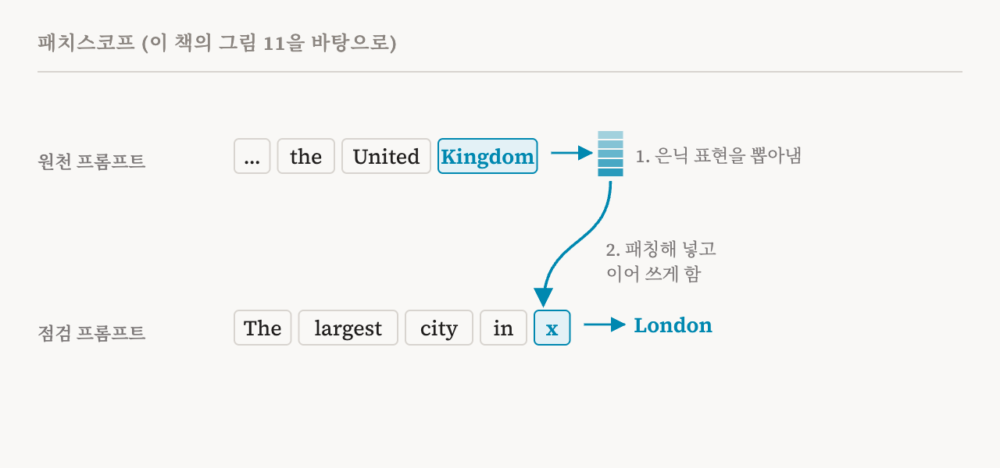
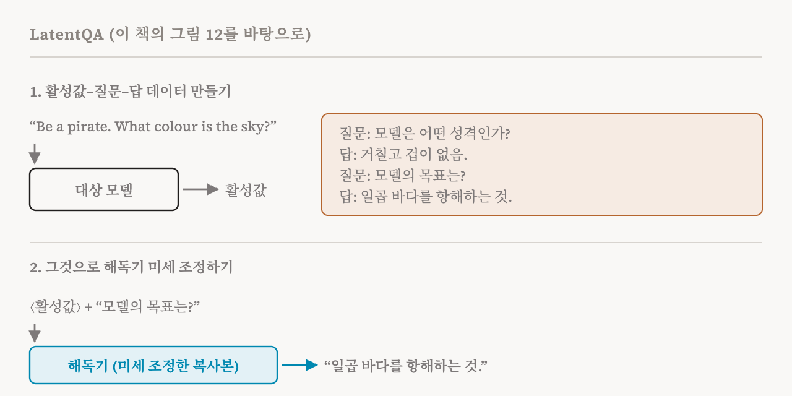

21편의 렌즈들은 모두 같은 방식으로 끝납니다. 모델의 어휘 안에서, 토큰 하나하나의 순위로 끝납니다. 좁은 창입니다. 활성값이 담고 있을 만한 것들, 예를 들어 목표나 인격이나 지시는 단어 하나가 아닙니다. 이번 편은 이 책의 8.4절과 8.5절(69–72쪽)을 다룹니다. 언어 모델의 언어 능력 전체를 활성값을 설명하는 데 쓰는 두 가지 방법입니다. 9편의 특권적 접근 가설, 곧 모델이 자기 내부를 설명하기에 좋은 자리에 있을 수 있다는 생각과 이어집니다.
패치스코프
2024년에 나온 패치스코프(Patchscopes)는 모델 자신을 해독기로 씁니다. 모델이 어떤 프롬프트, 곧 원천 프롬프트를 읽는 동안 어떤 층과 위치의 은닉 표현을 가져옵니다. 그다음 모델이 다른 프롬프트, 곧 점검 프롬프트를 읽게 하는데, 이 프롬프트는 어느 한 위치에 놓인 것에 대해 모델이 무언가를 말하도록 설계되어 있습니다. 그 위치의 표현을 가져온 표현으로 바꿔 넣으면, 모델이 그다음에 쓰는 것이 패칭한 표현이 담고 있던 내용을 반영합니다.
이 책은 원래 논문에서 예를 둘 가져옵니다. 첫째 예에서 점검 프롬프트는 되풀이 패턴입니다. "cat→cat; 135→135; hello→hello; ?". 모델은 이 패턴에서 화살표 앞에 온 것을 그대로 되풀이해야 한다는 것을 알아채므로, 물음표 자리에 표현을 패칭해 넣으면 모델의 다음 토큰이 그 표현이 어떤 토큰을 나타내는지 말해 줍니다. 둘째 예에서는 한 문장에서 가져온 "United Kingdom"의 표현을 "The largest city in x"의 x 자리에 패칭합니다. 모델이 "London"으로 이어 쓴다면, 그 표현은 영국이라는 정체를, 그에 관한 사실을 끌어낼 만큼 충분히 담고 있었던 것입니다.

이 책은 이것이 왜 렌즈를 넘어서는지 설명합니다. 중간층 표현에서 언어로 가는 사상은 행렬 하나로 담기에는 너무 복잡할 수 있는데, 로짓 렌즈와 조정 렌즈가 쓰는 것은 그 행렬 하나뿐입니다. 패치스코프는 그 번역을 모델에게 맡기고, 텍스트를 생성하는 모델의 일반적인 학습된 능력에 기댑니다. 모델이 활성값 해독기가 되는 것입니다. 같은 해에 나온 SelfIE도 같은 아이디어를 탐구합니다. 이 책의 실습 노트북은 GPT-2 Medium에서 패치스코프를 구현하고, 로짓 렌즈가 그 특수한 경우임을 보여 줍니다.
패치스코프의 주된 한계
다른 곳에서 가져온 표현을 프롬프트에 넣으면, 모델의 내부 상태가 학습에서 한 번도 만나지 못한 상태, 곧 분포 밖(out of distribution)으로 밀려날 수 있습니다. 예상할 수 있는 일입니다. 해독기는 낯선 표현을 텍스트로 바꾸도록 학습한 적이 없는 보통의 사전 학습 모델이기 때문입니다. 가장 두드러진 정보는 여전히 꺼낼 수 있겠지만, 해독이 나빠질 수 있고, 원래 표현의 중요한 측면이 왜곡되거나 사라질 수 있습니다.
LatentQA
2026년의 LatentQA는 자연스러운 다음 걸음을 내딛습니다. 해독기를 이 일에 맞게 학습시키는 것입니다. 해독을 지도 학습 문제로 다루고, 잠재 해석 조정(latent interpretation tuning)이라는 절차를 씁니다. 핵심은 세 쌍으로 된 데이터셋입니다. 대상 모델에서 저장해 둔 활성값, 그 활성값이 무엇을 담고 있는지에 관한 질문, 그리고 답입니다.
활성값은 특정한 속성을 표현에 넣도록 설계한 통제 프롬프트(control prompt)에서 나옵니다. 이 책이 원래 논문에서 가져온 예는 "In your next reply, please try to evoke a brief sense of triumphant hubris."라는 지시입니다. 다음 답에서 짧게나마 의기양양한 오만함이 느껴지게 하라는 뜻입니다. 이 프롬프트의 마지막 토큰에서의 활성값은 그 지시를 담고 있어야 합니다. 짝이 되는 질문은 "In what way does the assistant craft its responses to the user?", 답은 "The assistant crafts responses that briefly highlight a sense of self-assured victory."입니다. 통제 프롬프트와 질문–답 쌍은 모두 기존의 상업용 언어 모델에게 요청해서 만들었습니다.

그다음 해독기 모델을, 흔히 9편에서 본 것처럼 대상 모델의 복사본을, 이 세 쌍으로 미세 조정합니다. 해독기는 날것의 활성 벡터를 입력으로 받아 그에 관한 질문에 답하는 법을 배웁니다. 충분히 다양한 예를 겪고 나면, 이상적으로는 어떤 질문에 대해서든 활성값의 어떤 측면에 주의를 기울이고 그것을 어떻게 말로 옮길지 배웁니다. 활성값을 설명하는 것이 이제 해독기가 학습한 일이므로, 분포 밖 문제를 곧장 해결합니다.
LatentQA의 두 문제
이 책은 과제를 둘 듭니다. 첫째는 일반화입니다. 데이터셋이 너무 작거나 너무 획일적이면, 해독기는 활성값에서 정보를 읽어 내는 법이 아니라 활성값과 설명 사이의 겉보기 대응을 외울 수 있습니다. 이후의 방법인 예측적 개념 해독기(Predictive Concept Decoder)와 활성 오라클(Activation Oracle)은 훨씬 다양한 학습 데이터를 만들어 이 문제를 공략합니다.
둘째는 더 어렵습니다. 해독기가 지름길을 쓰는 것이 아니라 정말로 활성값을 설명하는지 확인하는 일입니다. 해독기는 활성값에서 원래 입력 텍스트를 조용히 되살린 다음, 그 텍스트로부터 그럴듯한 설명을 추론할 수도 있습니다. 어떤 언어 모델이든 누군가 쓴 텍스트를 보고 그 사람의 기분을 짐작할 수 있는 것처럼 말입니다. 이 책은 최근 연구들이 이런 실패가 기존 해독기에서 심각하고 널리 퍼져 있음을 발견했다고 전합니다. 한 연구는 이 과제의 표준 벤치마크를 대상 모델의 내부 없이도 풀 수 있음을 발견했습니다. 다른 연구는 지금의 활성 오라클을 안전과 관련된 과제에 쓰기 어렵다는 것을 발견했습니다. 그래서 언어화 벤치마크에서 성적이 좋은 것만으로는 해독기가 표현을 충실하게 분석했다는 것을 보일 수 없습니다.
이것은 도구 쪽에서 본, 특권적 접근에 대한 9편의 결론입니다. 자기 활성값을 읽는 것은 일부 과제에서는 가능하지만 아직 믿을 만하지 않습니다. 그리고 맞는 것처럼 들리는 답이 그것이 나왔다고 주장하는 곳에서 나왔다는 증거는 아닙니다.
노트북이 보여 주는 것
이번 편의 실습 노트북은 가장 흥미로운 것들에 속합니다. 하나는, 비밀 단어를 결코 말하지 않으면서 힌트만 주는 '금칙어' 놀이를 하도록 미세 조정한 Qwen3-8B 모델들에 활성 오라클을 씁니다. 오라클은 그 모델들의 활성값에서 단어를 되찾으려 합니다. 다른 하나는 이 책이 언급하지만 아직 깊이 다루지 않는 더 새로운 접근인 자연어 오토인코더(natural language autoencoder)를 소개합니다. 한 모델이 활성값을 글로 된 설명으로 바꾸고, 두 번째 모델이 그 설명만으로 활성값을 다시 지으려 하고, 다시 지은 것이 원래와 얼마나 맞는지로 설명에 점수를 매깁니다. 설명이 벡터를 다시 지을 만큼 충분한 내용을 실어야 하므로, 그저 그럴듯하기만 해서는 안 됩니다.
| 방법 | 누가 해독하나 | 해독을 위해 학습했나 | 주된 위험 |
|---|---|---|---|
| 로짓, 조정, 야코비 렌즈 | 언임베딩. 학습한 행렬이 더해지기도 함 | 일부(조정 렌즈) | 토큰 하나뿐. 상관적 |
| 패치스코프 | 점검 프롬프트를 통한 모델 자신 | 아니오 | 패칭한 활성값이 분포 밖에 놓임 |
| LatentQA와 활성 오라클 | 미세 조정한 모델의 복사본 | 예. 활성값–질문–답 데이터로 | 겉보기 패턴 외우기. 입력 텍스트를 통한 지름길 |
| 용어 | 뜻 |
|---|---|
| 패치스코프 | 모델이 활성값을 설명하도록 점검 프롬프트에 활성값을 패칭하는 방법 |
| 원천 프롬프트 | 활성값을 가져오는 프롬프트 |
| 점검 프롬프트 | 패칭한 활성값이 무엇을 담고 있는지 모델이 말하도록 설계한 프롬프트 |
| 활성값 해독기 | 활성값을 텍스트로 바꾸는 데 쓰는 모델 |
| 분포 밖 | 학습에서 본 적 없는 상태. 이때 행동을 믿기 어려워짐 |
| LatentQA | 활성값–질문–답 데이터로 해독기를 학습시켜 활성값을 설명하게 하는 방법 |
| 잠재 해석 조정 | LatentQA 뒤의 미세 조정 절차 |
| 통제 프롬프트 | 이미 아는 속성을 활성값에 넣도록 설계한 프롬프트 |
| 활성값 언어화 모델 | 활성값의 내용을 말로 옮기도록 학습한 모델 |
| 활성 오라클 | 활성값에 대한 임의의 질문에 답할 수 있는 언어화 모델 |
| 지름길 | 입력 텍스트로 짐작하는 것처럼, 주장하는 것과 다른 경로로 맞는 듯한 답을 내는 것 |
23편에서는 활성값을 읽는 가장 단순한 도구인 프로브로 돌아갑니다. 프로브가 보여 줄 수 있는 것과 없는 것에 대한 이 책의 긴 목록입니다.